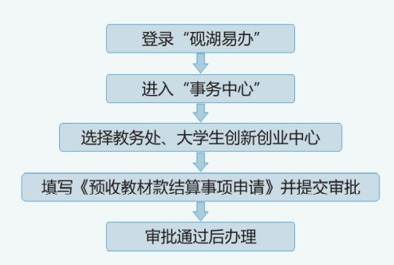

预收教材款结算事项申请
事项编号：1267
| 办理方式 | 线上办理 | 事项性质 | 审批事项 |
| 办理途径 | 线上 | 办理时间 | 上午8:00-12:00，下午14:30-18:00 |
| 咨询电话 | 028-84078905 | 监督电话 | 暂无 |
1.如下：

1.退费需提交《预收教材费结算表》班级所有同学签字的PDF文件及Excel表格
2.补交费请以班级为单位存入学校账户，上传交费凭据，并提交《预收教材费结算表》所有同学签字的PDF文件及Excel表格。
办事依据：
《成都理工大学教材建设与管理办法》（成理校教〔2021〕8号)
| 注意事项 | 1、请辅导员务必填写承办人联系电话。 开户行：中国建设银行股份有限公司成都双建路支行 银行账号：5100 1885 3360 50716993 |
- 服务人群：
- 学校管理员,教师,学生
- 所属部门：
- 教务处、大学生创新创业中心
- 服务日期：
- 长期有效
办理入口
班级教材款结算明细(学生)
班级预收教材款明细（学生）